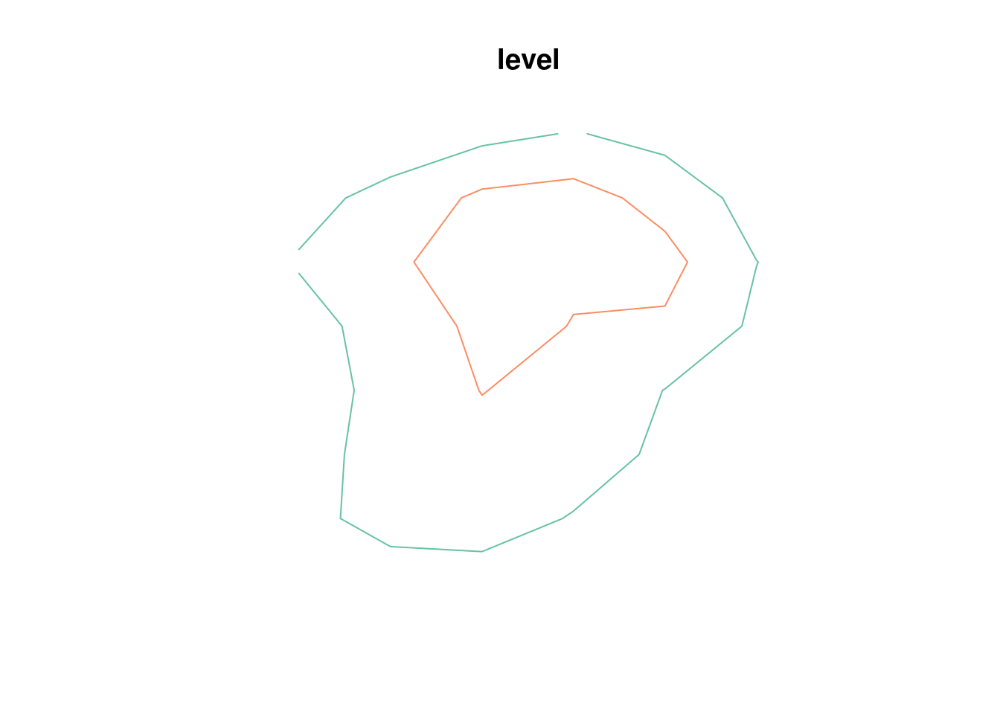
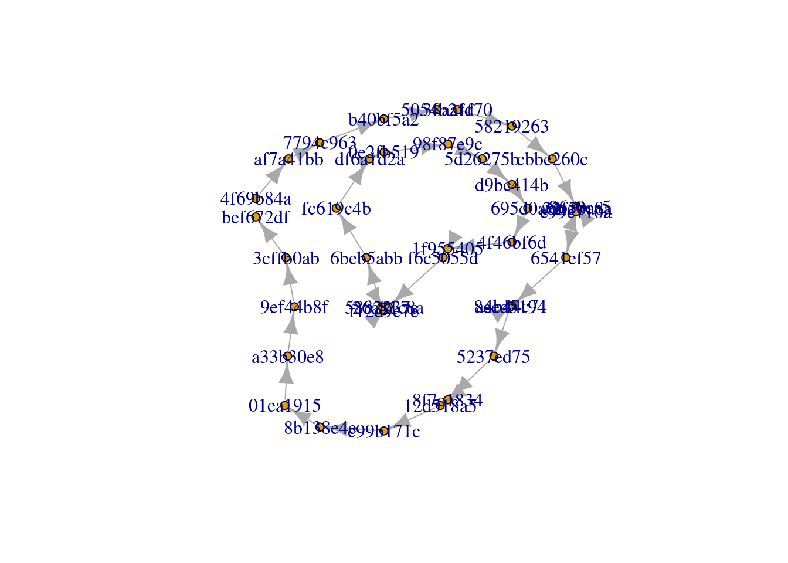
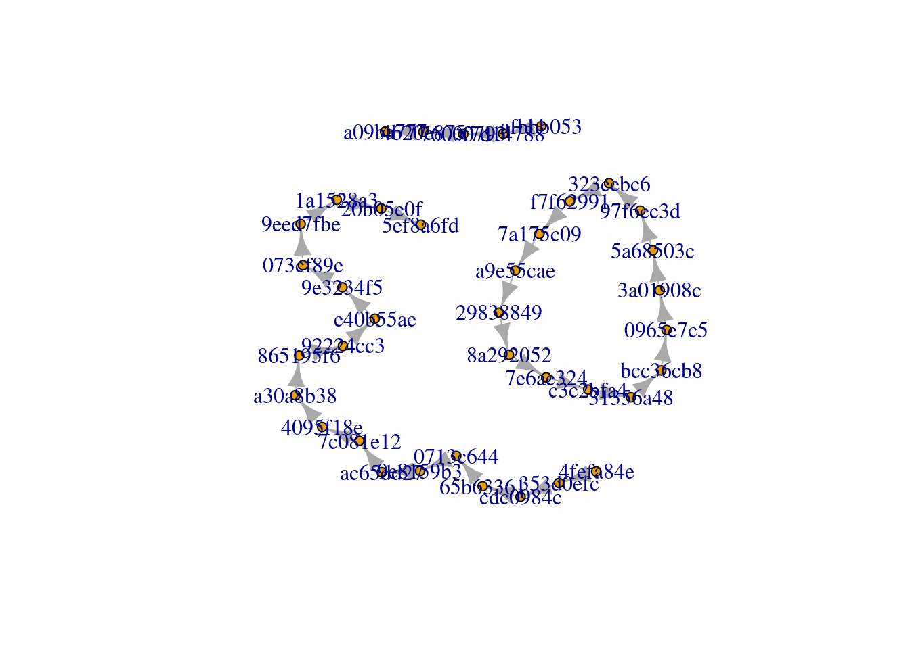
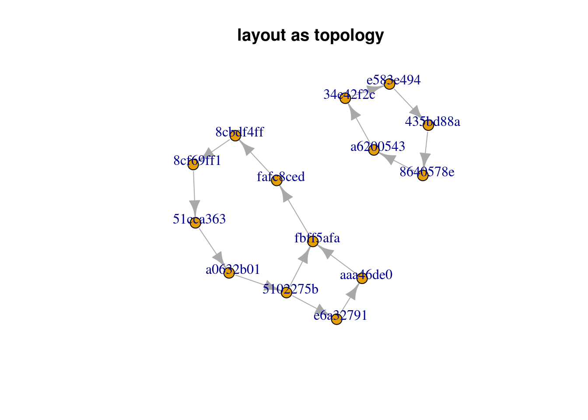
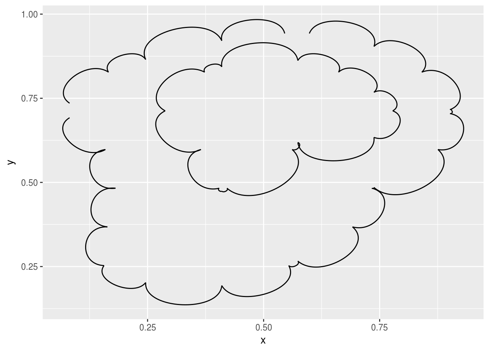
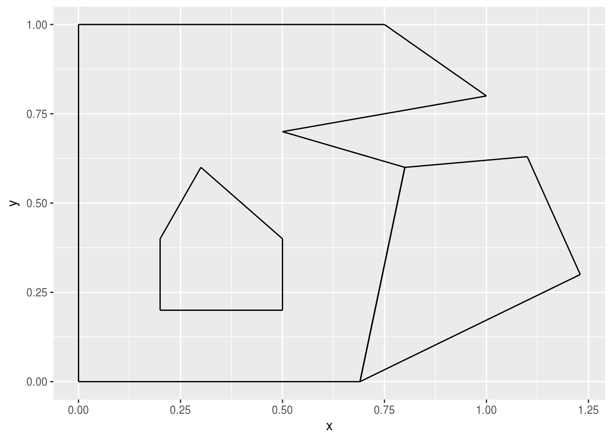
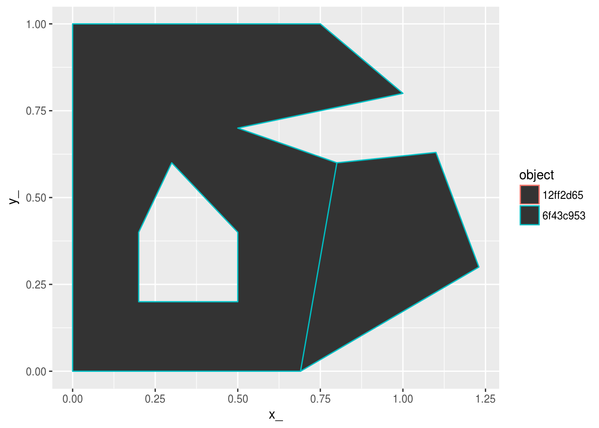

The goal of scgraph is to convert anything expressible in silicate form to igraph, and anything in igraph form to silicate form.
In silicate general form the data can be offloaded or transmitted via any standard table-based data system.
Installation
You can install scgraph from github with:
# install.packages("devtools")
devtools::install_github("hypertidy/scgraph")Example
This is a basic example which shows you how to create graphs, from non-graph data that has connectivity understood by the ‘sc’ framework.
First generate some line data.
library(silicate)
library(raster)
r <- aggregate(raster(volcano), fact = 10)
line <- sf::st_as_sf(rasterToContour(r, levels = c(130, 165)))
plot(line)
Convert to graph, the first is a bit of a mess since we are plotting it in “space”-space. The second does more work to show the topology more clearly with two disconnected lines and the single ring.
(That’s the idea.)


Another example. Here the “hole” in the spatial polygon is seen as a disconnected island, and the two polygons that share an edge running in two different path directions are together.
data("minimal_mesh", package = "silicate")
set.seed(10) ## WIP will currently always have new UIDs for the same data
sc_model <- SC(minimal_mesh)
ggeog <- as.igraph(sc_model, layout = TRUE)
gtopo <- as.igraph(sc_model, layout = FALSE)
## can't see how else to easily remove the geographic layout?
#igraph::V(gtopo)$name <- igraph::V(ggeog)$name
## drop IDs and use an integer
#igraph::V(gtopo)$name <- igraph::V(ggeog)$name <- seq_along(igraph::V(ggeog)$name)
#p <- par(mfrow = c(1, 2))
library(igraph)
#>
#> Attaching package: 'igraph'
#> The following objects are masked from 'package:dplyr':
#>
#> as_data_frame, groups, union
#> The following object is masked from 'package:raster':
#>
#> union
#> The following objects are masked from 'package:stats':
#>
#> decompose, spectrum
#> The following object is masked from 'package:base':
#>
#> union
plot(ggeog, vertex.size = 9, main = "layout as geography", vertex.label.dist= .7, vertex.label.cex = 1)
plot(gtopo, vertex.size = 9, main = "layout as topology", vertex.label.dist= .7, vertex.label.cex = 1)
library(ggraph)
#>
#> Attaching package: 'ggraph'
#> The following object is masked from 'package:sp':
#>
#> geometry
g <- as.igraph(line)
ggraph(g) + geom_edge_arc()
#> Using `nicely` as default layout
ggraph(g) + geom_edge_link()
#> Using `nicely` as default layout
The geom edge link is essentially the same as the map data.
library(ggraph)
ggraph(ggeog) + geom_edge_arc()
#> Using `nicely` as default layout
ggraph(ggeog) + geom_edge_link()
#> Using `nicely` as default layout
## reconstruct the sf object as a ggplot
## using the sc decomposition forms that scgraph uses
sc_model <- SC(minimal_mesh)
library(dplyr)
## a kind of db-fortify
tab <- with(sc_model,
object %>% inner_join(object_link_edge) %>% inner_join(edge))
#> Joining, by = "object_"
#> Joining, by = "edge_"
## this used to be PATH based, so was join-able, need a tidier way to express this
## cascade
tab$x1 <-sc_model$vertex$x_[ match(tab$.vertex0, sc_model$vertex$vertex_)]
tab$y1 <-sc_model$vertex$y_[ match(tab$.vertex0, sc_model$vertex$vertex_)]
tab$x2 <-sc_model$vertex$x_[ match(tab$.vertex1, sc_model$vertex$vertex_)]
tab$y2 <-sc_model$vertex$y_[ match(tab$.vertex1, sc_model$vertex$vertex_)]
library(ggplot2)
ggplot(tab, aes(x1, y1, xend = x2, yend = y2, col = object_)) + geom_segment()